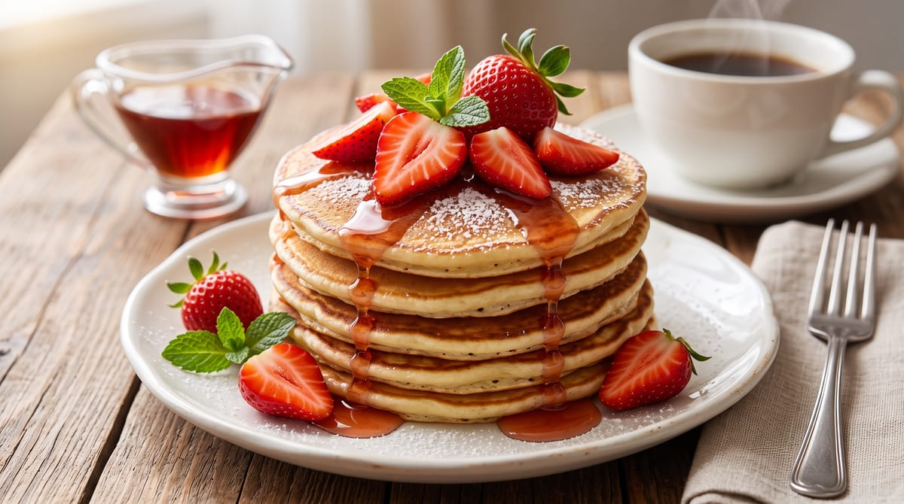

Breakfast
Strawberry Pancakes
Fluffy pancakes with fresh strawberries and maple syrup.
- Prep
- Cook
- Serves
- 2
Ingredients
Instructions
-
Mix the dry ingredients
Combine flour, sugar and baking powder in a bowl.
-
Make the batter
Whisk the milk and egg, then stir into the dry ingredients until just combined.
-
Cook the pancakes
Heat a lightly buttered pan. Cook small portions of batter until bubbles appear, then flip and cook until golden.
-
Serve and enjoy
Top with sliced strawberries and drizzle with maple syrup.